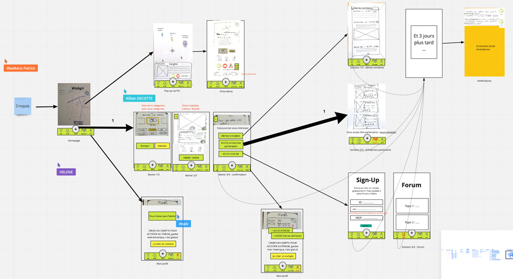

Dans cette partie, nous allons définir les points d'entrée et de sortie qui sont respectivement : d'où vient l'utilisateur et comment cet utilisateur va être informé de son action sur un site ou une application.
Point d'entrée : (d'où vient l'utilisateur, les sources ayant attiré le consommateur)
J'ai plusieurs parcelles et j'aimerai être au courant des différentes maladies ou vols autour de moi, et ne plus me faire avoir.
Point de sortie : (prise de contact après le parcours client)
Système de notifications pour connaître ce qu'il se passe autour de soi, si on a eu une réponse suite à sa requête sur le forum, si son alerte a été validé par une personne tierce, etc.
Ensuite pour les "pendants", il y a la familiarisation où l'on appâte le client en montrant qu'on a résolu les problèmes qu'il a rencontrés ; les objectifs où l'on définit ce que l'on souhaite faire ou voir sur l'application et le parcours d'actions qui est le parcours du client.
Pendant - Familiarisation : (qu'est-ce qu'on va me proposer)
Être informé par notification dès problèmes autour de moi. Je pourrais donc prendre mes dispositions selon.
Pendant - Objectifs :
Créer une alerte pour déclarer un problème sur une parcelle.
Pendant - Utilisation : (parcours client défini par des verbes d'action)
- Je me connecte à l'appli : apparition de la carte de ma zone
- Je clique sur le bouton alerter
- Je choisis grâce à des boutons entre 6 alertes. Appui court: sous-alertes
- J'appuis long: ouverture du formulaire d'alerte
- Je mets un commentaire et je prends une photo (pas obligatoire)
- Je poste mon alerte
- Je suis mis en relation avec des entreprises ou avec des thématiques forum en lien avec mon alerte
- Je reçois en notif des réponses de la communauté à mon alerte (commentaire, confirmation, nouvel article forum...)
- Je peux Liker les alertes des environs si je souhaite les "confirmer"



{kind=link}
{kind=link}
{kind=link}
{kind=link}
{kind=link}
{kind=link}
{kind=link}